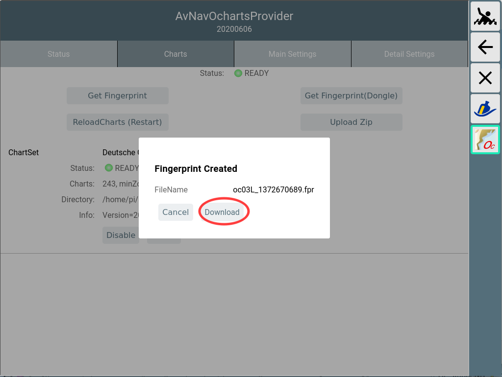
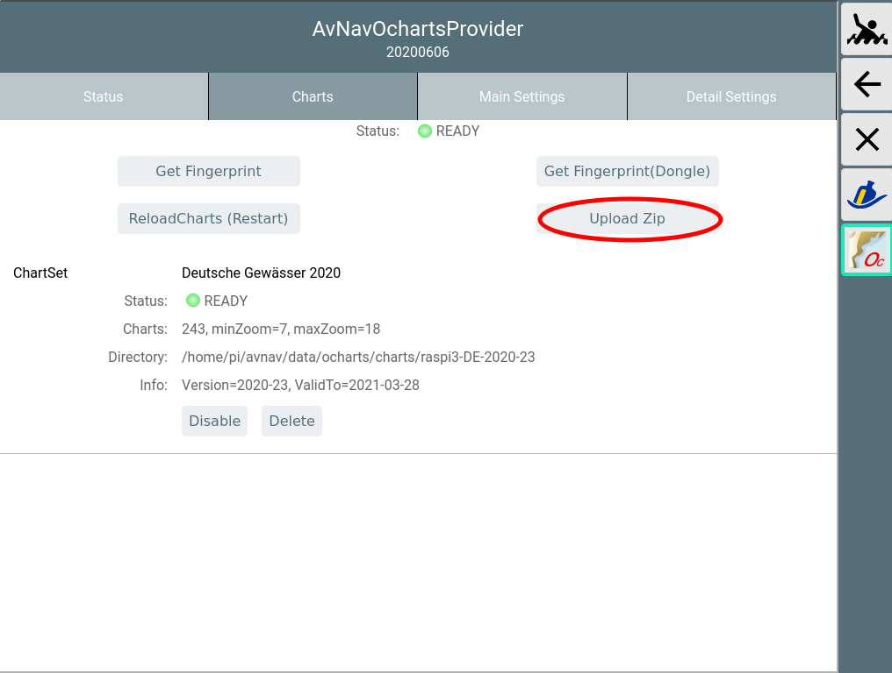
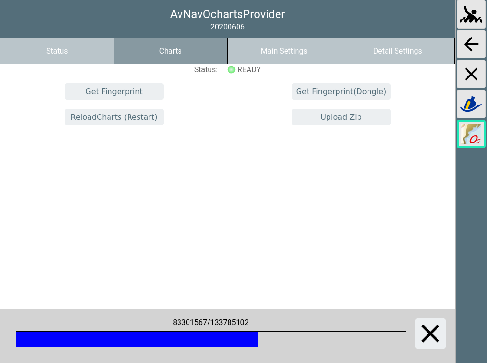
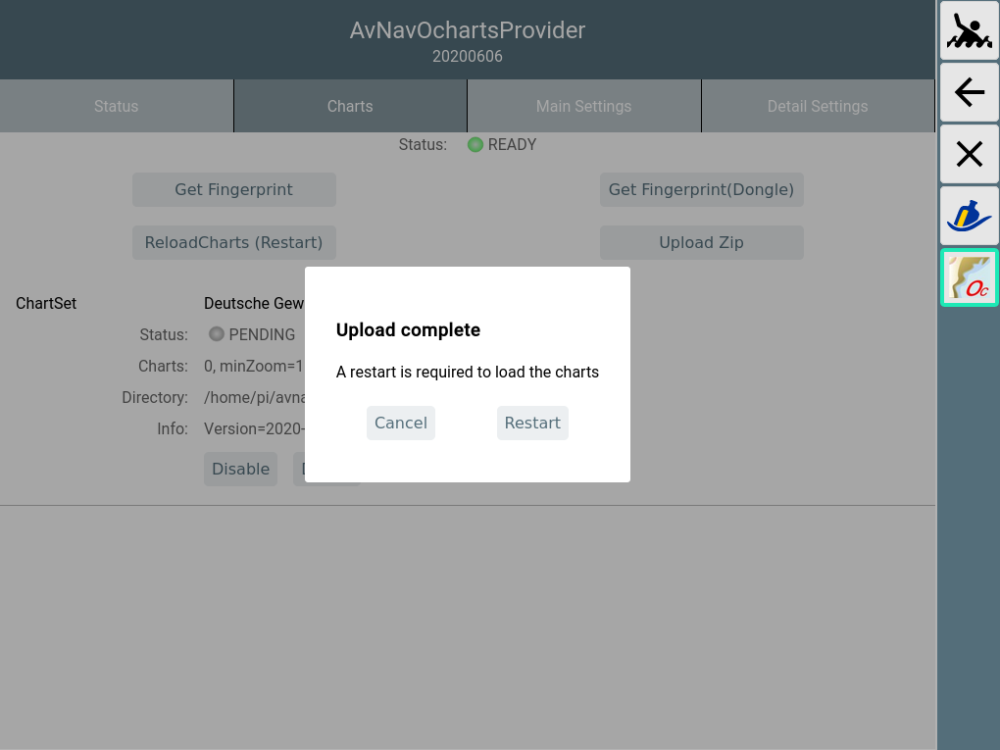
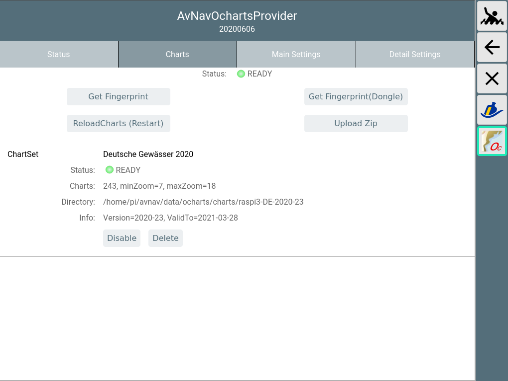
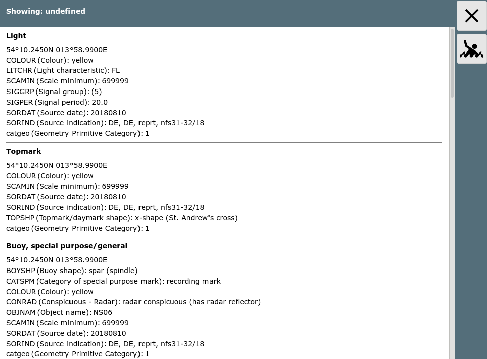

=== not for Android ===
AvNav is able to handle charts in various raster formats. So far it was unable to handle any commercial charts. The o-charts company supplies charts for various regions of the world for usage in OpenCPN.
After some agreements with o-charts, those charts can now also be used for AvNav (starting with version 20200515 with a plugin - see below). AT present you can use oesenc vector-charts.
To display those charts in AvNav they must be rendered into raster images. This is handled by a new plugin for AvNav(avnav-ocharts). The rendering takes place on the fly whenever tiles are to be displayed. However, major areas of the chart will be prerendered to cached tiles upon chart installation. This way those charts can be used the normal way - without worring about the rendering process.
All oeSENC charts handling is performed by the plugin - including
installation (you cannot install them directly via the download page). For this purpose
a dedicated GUI is offered by the plugin. You enter it from the main page
via  (User
Apps) and Ocharts-Provider .
(User
Apps) and Ocharts-Provider .
Important Hint: If you do not have a dongle from o-charts, your chart license is bound to your system. So in case of any trouble do not set up a new system (by writing an image to an SD card) but instead try to repair the system. If you set up a new system you will lose your license. I will by happy to support in case of trouble - contact e.g. via email.
To be able to buy charts at o-charts you have to create an account at their site first.
Afterwards you have to register the systems you would like to buy the charts for there. AvNav is using the "Offline" process .
This process consists of the following steps:
For updates repeat steps 4, 5 and 6 (only requesting the notification mail at step 4)
For further chart sets steps 3-6.
For steps 2,3,4 and 5 you need a system with internet connectivity. You can e.g. use a laptop or an android device.
I created a video to demonstrate this process. Additionally here is a short description.
Hint: If the charts are already registered on the same system (for OpenCPN) you can directly continue at step 6. Alternatively you could also configure the OpenCPN chart directories with o-charts at the plugin .
Via  -> you enter the GUI of
the plugin, select the "Charts" tab.
-> you enter the GUI of
the plugin, select the "Charts" tab.
Use "Get Fingerprint" to create the fingerprint file. If you are using an o-charts dongle - just select "Get Fingerprint(Dongle)".

Choose Download to save the created file on your device.
Enter the o-charts page and upload the fingerprint.

With "Choose File" you select the file stored at step 2. Assign a meaningful name to the new system - this will be part of the mails you will receive later.
Select the desired charts from oeSENC charts.

At 1 you can assign charts to your system (in this screenshot this is not available anymore as the max amount of 2 systems are already assigned). At 2 you request the mail holding the download link (you would do the same for updates - in the screenshot: last version I have downloaded is 21, latest available is 23)

After a short time you will receive a mail containing the download link for your charts. Download the zip file.

In the plugin's GUI select "Upload Zip" to transfer the zip file downloaded in step 5 to AvNav.
There will be a progress bar during upload.

After the upload is completed the zip file will be unpacked. Some initial checks can take some time.
Unless configured otherwise, the charts will be uploaded to /home/pi/avnav/data/ocharts/charts.

After all checks have passed successfully, the dialog will ask to restart the plugin to make the charts usable.
If the newly uploaded chart contains updates to an already existing set, the existing set will be deactivated at restart. You may change this later on within the GUI. Chart sets not required anymore can be deleted.
During restart a couple of error messages will be displayed briefly but within 30s the status should be at least set to yellow (the plugin is now reading all charts).
After all charts are successfully read the status should change to green (READY).

If the status turns to "ERROR" (red) you maybe uploaded a zip that was not built for your current system. You can check details in the log file at /home/pi/avnav/data/ocharts/provider.log.
Now the charts are available and can be used.
At the "Status" tab you can see some more details.
In the screenshot you see the process ("FILLING") that was started after upload. It pre-renders a major set of chart tiles to a cache file. This will help to reduce on-the-fly rendering lags that otherwise would (potentially) occur due to the limited resources of the pi. This process can be active for several hours. The provider will use one CPU (out of the 4 available) on a raspberry pi during this time. Once prefill is completed cpu usage will dramatically decrease.
In any case you may immediately start using the charts (the prefill will only use the idle time).


As already mentioned, there is a chance of lagging to occur when you are displaying a particular range/zoom of the chart for first time (you will notice this especially on the smaller/older pi's). After first usage of an area the necessary tiles will be held in the cache file and there should be no more lag.
As the o-charts are vector charts you can adjust their look and feel. However some limitations must be considered:
Changing display parameters is done in the plugin GUI( ->),
tab "Main Settings".
->),
tab "Main Settings".
If you change a setting (1) it will be displayed bold. Changes will only become effective when you click "Update Settings"(2).
By selecting "Cancel" you can revert your changes. "Defaults" will reset to the built-in defaults. Most parameters are similar to the ones you find at OpenCPN settings.
The following parameters are available.
| Name | Meaning | Default |
| Show Text | show text for chart objects | true |
| Important Text Only | hide less important text | false |
| Light Descriptions | show descriptions for lights | true |
| Extended Light Sectors | show sectors for lights | true |
| Show Depth | show soundings | true |
| Chart Information Objects | show special chart object infos | true |
| Buoy/Light Labels | show labels for buoys and lights | true |
| National text on chart | show national text | true |
| Show Lights | show lights | true |
| Reduced Detail at Small Scale | reduce details at lower zoom levels | true |
| De-Cluttered Text | improve text positioning | true |
| Display Category | Base, Standard, All, User Standard | All |
| Graphics Style | Paper Chart, Simplified | Paper Chart |
| Boundaries | Plain, Symbolized | Plain |
| Colors | 4Color, 2 Color | 4 Color |
| Text Font Size | Scaling for text on charts | 1 (ca. 12px) |
| Soundings Font Size | Scaling for soundings (since oesenc-pi 4.2.x) | 1 (ca. 12px) |
| Scale | Base scaling. Higher values for more details on lower zoom levels | 2 |
| UnderZoom | Number of zoom levels to downscale higher resolution chart tiles if no chart tile is available at the requested zoom level. | 1 |
| OverZoom | Number of zoom levels to upscale a lower resolution chart tile if
is no chart tile is available with better resolution. Hint: Scale, UnderZoom and OverZoom heavily influence the cost of the rendering process as they determine the number of charts to be processed to generate a single chart tile. Lower values normally mean less charts (i.e. being faster) - but there could be white areas between chart tiles. The defaults should be a good compromise. |
4 |
| Depth | Unit for soundings(Meters, Feet, Fathoms) | Meters |
| Shallow Depth | Adjust to your needs | 2 |
| Safety Depth | Adjust to your needs | 3 |
| Deep Depth | Adjust to your needs | 6 |
At the tab "Detail Settings" you can switch on/off particular chart features.
Since version 20201219 (versions of AvNav and plugin are required) chart object information is displayed upon click.

The dialog box displays compact information about "important" objects like lights, buoys and others.
By clicking "Info" you can view the raw information from the chart.

If you are running an AvNav image you can install the new plugin as package. For the Headless Images the necessary packages are already contained in the images. Additionally they are available in the repository. You need to install
For avnav-ocharts-provider you need at least version 20200606. The package avnav-oesenc is the oesenc-pi plugin - repackaged to install into /usr/lib/avnav/plugins/ocharts to avoid conflicts with a parallel OpenCPN installation.
If you are working on other images you should add the repository from free-x:
You can also see the packages in the release list below. To use one of those packages (if it is not in the repo yet or if you need an older one) - just download and install the package (replace the version by the one you want):
You can find all releases and intermediate developer builds (daily builds) at:
Using the charts in AvNav with the oesenc-pi plugin has been agreed with
o-charts and therefore is inline with their license conditions.
You have to agree to the license
conditions of o-charts.
Especially it is not allowed to copy the charts or use them on other than
the licensed systems.
Access to the charts in AvNav is only possible from within the local net. You can connect at most 5 devices (Clients) at the same time.
For software licenses see the Readme.
The charts are provided by an executable on the raspberry pi that
normally serves at port 8082. This executable loads the oesenc-pi OpenCPN
plugin.
Communication with AvNav is handled by an AvNav plugin.
The GUI is a reactjs app that is also provided by the executable. It is integrated into AvNav as a User App.
You will find the complete code at GitHub.
You install into /usr/lib/avnav/plugins/ocharts. The data directory is /home/pi/avnav/data/ocharts. You can reconfigure the AvNav plugin by editing avnav_server.xml. Normally this is not necessary at all. If you need to configure anyway this has to be done in the Plugin-Handler section.
For a list of available options refer to the description in the plugin source code.
If you e.g. want to use charts that you already installed for OpenCPN you can just point to the OpenCPN o-chart directories:
Normally it is recommended to upload the zip files as described at charts .
Since version 20200709 you can separately set the directory for uploading the charts:
In this example the directory is set to
/home/pi/avnav/data/charts/ocharts (normally it is located at
/home/pi/avnav/data/ocharts/charts). This could be helpful on the touch image as sufficient disk space is
available only in /home/pi/avnav/data/charts.